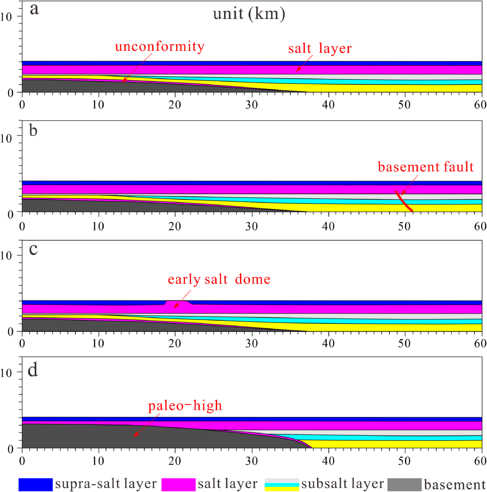
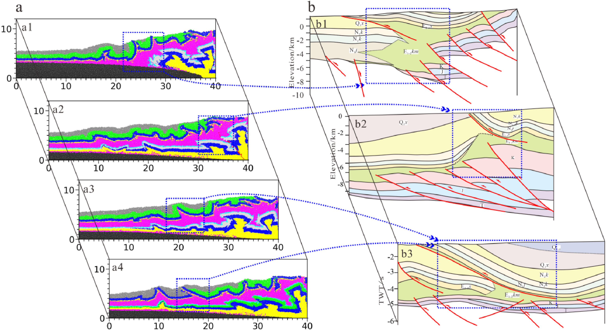

刺穿构造的形成机理比隐刺穿构造更为复杂，目前对该问题的研究较少。本文在野外地质露头调查和地震资料精细解释的基础上，结合构造-沉积环境演化和生长地层特征，分析了库车坳陷盐刺穿构造的分布、几何形态和演化历史。在此基础上，通过离散元数值模拟实验，讨论了几种可能的因素对刺穿构造形成和演化过程的影响。结果表明：库车坳陷的盐刺穿构造主要发育在温苏古隆起北缘、却勒被动盐底辟和克拉苏基底先存断裂顶部。盐岩可直接穿透上覆地层，或通过断裂作用与围岩接触。生长地层特征表明，克拉苏地区的刺穿构造形成较早，温宿北缘的刺穿构造次之，却勒刺穿构造形成时间最晚。刺穿构造的演化可分为稳定期、弱挤压期和强挤压期三个阶段。在挤压环境下，仅仅依靠挤压应力，盐层很难形成刺穿构造。凸起的边缘、早期被动盐底辟、先存基底断裂顶部和沉积楔体的前缘，是刺穿构造发育的优先位置。古隆起的限制、基底断裂的再活化、早期被动盐丘的优先活动，以及造山带向盆地内部的进积作用，是刺穿构造发育的重要诱因。这些因素诱发刺穿构造的重要方式，是促进盐上地层的强裂冲断，从而为盐岩上涌提供通道。 (Yang et al.,2024)。
Yang, K., Qi, J., Shen, F., Sun, T., Duan, Z., Cui, M., … & Lv, J. (2024). Formation mechanism of salt piercement structures in a compressive environment: An example from the Kuqa depression, western China. Journal of Structural Geology, 178, 105005.题目
Formation mechanism of salt piercement structures in a compressive environment: An example from the Kuqa depression, western China
Keji Yanga, Jiafu Qib, Fangle Shenc*,Liangwei Xud, Tong Suna, Zhanzhan Duan c, Meijuan Cuie，Li Penge, Ji Lve
a. Hebei Key Laboratory of Strategic Critical Mineral Resources, Hebei GEO University, Shijiazhuang 050031, China b. State Key Laboratory of Petroleum Resources and Prospecting, China University of Petroleum, Changping, Beijing 102249, China c. Huaxin College of Hebei GEO University, Shijiazhuang 050000, China d. PetroChina Dagang Oilfield Exploration and Development Research Institute, Tianjin, 300280, China e. Bureau of Geophysics Prospecting Inc., CNPC, Research Center of Geology, Zhuozhou 072750, China
摘要
The formation mechanism of piercement structures is more complex than that of concealed piercement structures, and little research has been conducted on this topic. In this work, based on surveys of field geological outcrops and detailed interpretation of seismic data, combined with the evolution of the tectonic-sedimentary environment and stratum growth characteristics, the geometry and evolutionary history of salt piercement structures in the Kuqa Depression are investigated. Through discrete element numerical simulation experiments, the influences of various factors on the formation and evolution of the piercement structure are discussed. The results show that the piercement structures in the Kuqa Depression are mainly developed in the northern margin of the Wensu paleohigh, the Quele passive salt diapir, and at the top of the Kelasu basement fault. The salt can directly pierce the overlying strata or contact the surrounding rock through faulting. The characteristics of the growth strata reveal that the Kelasu piercement structure formed first, followed by the Wenshu piercement structure, and the Quele piercement structure formed later. The evolution of the piercement structure can be divided into three stages: quiet, weak compression and strong compression. Relying solely on tectonic compressive stress, it is difficult for salt layer to form piercement structures. The most advantageous location for the development of the piercement structure in a compressive environment is in the margin of the paleohighs and low bulges and at the top of early passive salt diapirs and preexisting basement faults. The front of the sedimentary wedges is also a preferential location for the development of piercement structures. The barrier of the paleo-high, reactivation of the preexisting basement fault, priority activation of the early passive salt dome, and progradation of the sedimentary wedge from the orogenic belt to the basin interior are favorable factors inducing piercement structure formation. An important mechanism for controlling salt piercement is to promote strong thrusting in suprasalt strata, which provides a channel for salt upwelling.

Fig. 3. Numerical simulation experiment model setup: (a) basic model, (b) basement fault model, © preexisting salt dome model, and (d) paleo-high model. The initial setting of the progradation model is consistent with the basic model.
